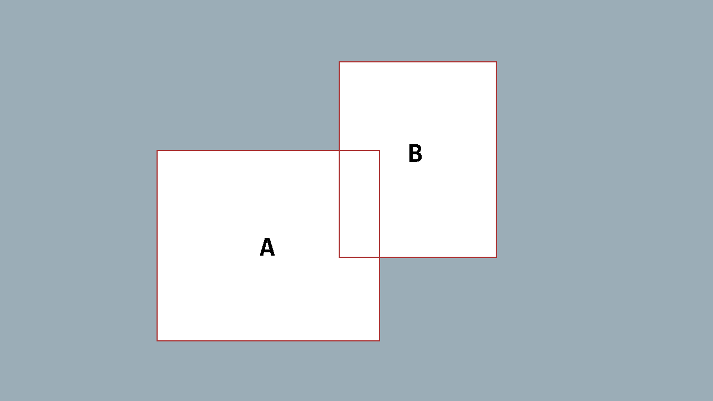
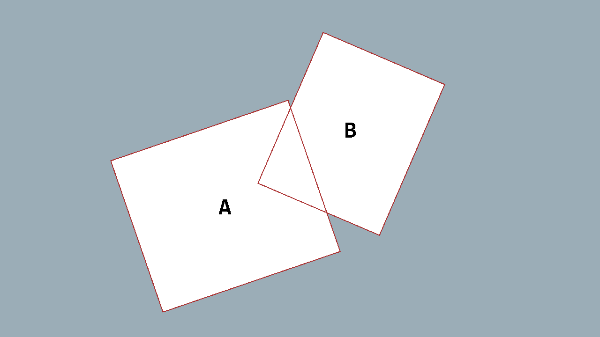

Axis-Aligned Bounding Box
Axis-Aligned Bounding Box collision detect, or AABB for short, is one of the simplest forms of collision detection.
- Axis-Aligned means the bounding boxes of the objects being compared for collision are aligned on both their x- and y-axes.
- Bound Box part of the name refers to a rectangular structure that defines the surface area of an object.
Take, for example, the following two bounding boxes in the image below:

The x- and y-axes of both boxes are aligned, which means we can use AABB collision detection to check for collision between them. Conversely, the following to bounding boxes are not Axis-Aligned

Being that they are not Axis-Aligned, we cannot accurately detect collision between the two using AABB collision detection.
Detecting a Collision
When using AABB collision detection, there are four conditions that must be true in order to say "a collision has occurred". Given Bounding Box [A] and Bounding Box [B]
- The left edge (x-position) of
[A]must be less than the right edge (x-position + width) of[B]. - The right edge (x-position + width) of
[A]must be greater than the left edge (x-position) of[B]. - The top edge (y-position) of
[A]must be less than the bottom edge (y-position + height) of[B]. - The bottom edge (y-position + height) of
[A]must be greater than the top edge (y-position) of[B].
If any of these four conditions are false even just one, then no collision has occurred.
The Code
Now that we know the conditions for AABB collision detection, let's add the code for it to our game.
Note
The Rectangle struct in MonoGame has the Rectangle.Intersects method which compares two Rectangle structs for intersection using AABB.
While you can, and should, just use that, the remainder of this tutorial will show how to implement it yourself so you understand what's going on under-the-hood.
Create a new class file called CollisionChecks.cs in the MonoGame project and add the following code
/// <summary>
/// Checks for collision between two rectangular structures using
/// Axis-Aligned Bounding Box collision detection.
/// </summary>
/// <param name="boxA">
/// The bounding box of the first structure.
/// </param>
/// <param name="boxB">
/// The bounding box of the second structure.
/// </param>
/// <returns>
/// True if the two structures are colliding; otherwise, false.
/// </returns>
public static bool AABB(Rectangle boxA, Rectangle boxB)
{
return boxA.Left < boxB.Right &&
boxA.Right > boxB.Left &&
boxA.Top < boxB.Bottom &&
boxA.Bottom > boxB.Top;
}
The method itself is pretty simple. It takes in two Rectangle values, then performs each fo the four checks for AABB collision detection. If any single check in the logic is false then the method will return false. It will only return true if all four checks pass.
Testing For Collision
Now that we have the code to check for AABB collision, let's test it out in our game project. Open the Game1.cs class file in the project and add the following fields.
// Represents bounding box [A]
private Rectangle _boxA;
// Represents bounding box [B]
private Rectangle _boxB;
// A value that indicates if the two bounding boxes are colliding.
private bool _areColliding;
// A 1x1 white pixel texture we can use to render primitives.
private Texture2D _pixel;
// The previous frame keyboard state.
private KeyboardState _prevKeyboardState;
// The current frame keyboard state.
private KeyboardState _curKeyboardState;
_boxAand_boxBare justRectanglevalues used to define the two bounding boxes we're going to test with._arCollidingis aboolfield we can use to store a value indicating if the two rectangles are colliding_pixelis aTexture2Dthat we'll create in a moment that we can use to draw the rectangles to the screen._prevKeyboardStateand_curKeyboardStateare used to track the state of keyboard input so we can move the rectangles around the screen.
Next, let's define the initial values for _boxA and _boxB. Locate the Initialize() method in the Game1 class and change it to the following:
protected override void Initialize()
{
base.Initialize();
// Define the x, y, width, and height of the two bounding boxes.
_boxA = new Rectangle(100, 100, 50, 50);
_boxB = new Rectangle(200, 200, 50, 50);
}
Now that we have the dimensions defined for the two rectangles, we need to create a 1x1 white pixel texture to render them with. Locate the LoadContent() method in the Game1 class and change it to the following:
protected override void LoadContent()
{
_spriteBatch = new SpriteBatch(GraphicsDevice);
// Create the 1x1 pixel texture
_pixel = new Texture2D(GraphicsDevice, 1, 1);
_pixel.SetData<Color>(new Color[] { Color.White });
}
Next, we need to update the keyboard input states and check for input to move the rectangles around the screen. Locate the Update(GameTime) method in the Game1 class and change it to the following:
protected override void Update(GameTime gameTime)
{
// Update the input states.
_prevKeyboardState = _curKeyboardState;
_curKeyboardState = Keyboard.GetState();
MoveBoxA();
MoveBoxB();
// Check if _boxA and _boxB are colliding.
_areColliding = CollisionChecks.AABB(_boxA, _boxB);
base.Update(gameTime);
}
And add the following two methods to the Game1 which perform the movement checks for _boxA and _boxB
/// <summary>
/// Moves bounding box [A] based on keyboard input.
/// </summary>
private void MoveBoxA()
{
if(_curKeyboardState.IsKeyDown(Keys.W))
{
_boxA.Y--;
}
else if(_curKeyboardState.IsKeyDown(Keys.S))
{
_boxA.Y++;
}
if (_curKeyboardState.IsKeyDown(Keys.A))
{
_boxA.X--;
}
else if (_curKeyboardState.IsKeyDown(Keys.D))
{
_boxA.X++;
}
}
/// <summary>
/// Moves bounding box [B] based on keyboard input
/// </summary>
private void MoveBoxB()
{
if (_curKeyboardState.IsKeyDown(Keys.Up))
{
_boxB.Y--;
}
else if (_curKeyboardState.IsKeyDown(Keys.Down))
{
_boxB.Y++;
}
if (_curKeyboardState.IsKeyDown(Keys.Left))
{
_boxB.X--;
}
else if (_curKeyboardState.IsKeyDown(Keys.Right))
{
_boxB.X++;
}
}
To go over the changes we've just made for the Update(GameTime) method
- We update the values of the
_prevKeyboardStateand_curKeyboardState. MoveBoxA()is called which checks W, S, A, and D key presses to move_boxA.MoveBoxB()is called, which checks Up, Down, Left, and Right key presses to move_boxB.CollisionChecks.AABB(Rectangle, Rectangle)is called, giving it both_boxAand_boxBto check if they are colliding. The resulttrueorfalseis returned back and stored in_areColliding.
Finally, we need to draw the rectangles to the screen. Locate the Draw(GameTime) method in the Game1 class and change it to the following:
protected override void Draw(GameTime gameTime)
{
GraphicsDevice.Clear(Color.Black);
// Draw the bounding boxes as white rectangles.
Color color = Color.White;
// If the bounding boxes are colliding, make them red instead.
if(_areColliding)
{
color = Color.Red;
}
_spriteBatch.Begin();
_spriteBatch.Draw(_pixel, _boxA, color);
_spriteBatch.Draw(_pixel, _boxB, color);
_spriteBatch.End();
base.Draw(gameTime);
}
Here we just creating a Color value defaulted to Color.White. Then we check if _areColliding is true, and if so change the color value to Color.Red. Finally we draw our two rectangles using the color value calculated based on if they are colliding.
If you run the game at this point, you should see two white rectangles on the screen. Use W, S, A, and D keys to move the left rectangle, and Up, Down, Left, and Right keys to move the right rectangle. If you make them collide, they will both turn red. Moving them apart so they are no longer colliding will change them back to white.
Conclusion
So far in this tutorial, we have discussed what Axis-Aligned Bounding Box means and how it can be used to detect collision between two rectangles. We then implemented a demo of this into a new MonoGame game project.
Not all objects in our game are rectangles through. Somteims we may have things like a ball that is circular. On the next page of this tutorial series, we'll discuss how to test for collision between two circular objects.